The TikZ and PGF Packages
Manual for version 3.1.9a
TikZ
21 Making Trees Grow
21.1 Introduction to the Child Operation¶
Trees are a common way of visualizing hierarchical structures. A simple tree looks like this:

Admittedly, in reality trees are more likely to grow upward and not downward as above. You can tell whether the author of a paper is a mathematician or a computer scientist by looking at the direction their trees grow. A computer scientist’s trees will grow downward while a mathematician’s tree will grow upward. Naturally, the correct way is the mathematician’s way, which can be specified as follows:
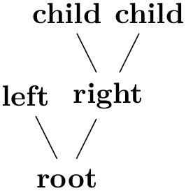
In TikZ, there are two ways of specifying trees: Using either the graph path operation, which is covered in Section 19, or using the child path operation, which is covered in the present section. Both methods have their advantages.
In TikZ, trees are specified by adding children to a node on a path using the child operation:
\path … child[⟨options⟩]foreach⟨variables⟩in{⟨values⟩}{⟨child path⟩} …; ¶
This operation should directly follow a completed node operation or another child operation, although it is permissible that the first child operation is preceded by options (we will come to that).
When a node operation like node {X} is followed by child, TikZ starts counting the number of child nodes that follow the original node {X}. For this, it scans the input and stores away each child and its arguments until it reaches a path operation that is not a child. Note that this will fix the character codes of all text inside the child arguments, which means, in essence, that you cannot use verbatim text inside the nodes inside a child. Sorry.
Once the children have been collected and counted, TikZ starts generating the child nodes. For each child of a parent node TikZ computes an appropriate position where the child is placed. For each child, the coordinate system is transformed so that the origin is at this position. Then the ⟨child path⟩ is drawn. Typically, the child path just consists of a node specification, which results in a node being drawn at the child’s position. Finally, an edge is drawn from the first node in the ⟨child path⟩ to the parent node.
The optional foreach part (note that there is no backslash before foreach) allows you to specify multiple children in a single child command. The idea is the following: A \foreach statement is (internally) used to iterate over the list of ⟨values⟩. For each value in this list, a new child is added to the node. The syntax for ⟨variables⟩ and for ⟨values⟩ is the same as for the \foreach statement, see Section 87. For example, when you say
the effect will be the same as if you had said
When you write
the effect will be the same as for
You can nest things as in the following example:
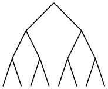
\begin{tikzpicture}
[level distance=4mm,level/.style={sibling distance=8mm/#1}]
\coordinate
child
foreach
\x in
{0,1}
{child
foreach
\y in
{0,1}
{child
foreach
\z in
{0,1}}};
\end{tikzpicture}
The details and options for this operation are described in the rest of this present section.
21.2 Child Paths and Child Nodes¶
For each child of a root node, its ⟨child path⟩ is inserted at a specific location in the picture (the placement rules are discussed in Section 21.5). The first node in the ⟨child path⟩, if it exists, is special and called the child node. If there is no first node in the ⟨child path⟩, that is, if the ⟨child path⟩ is missing (including the curly braces) or if it does not start with node or with coordinate, then an empty child node of shape coordinate is automatically added.
Consider the example \node {x} child {node {y}} child;. For the first child, the ⟨child path⟩ has the child node node {y}. For the second child, no child node is specified and, thus, it is just coordinate.
As for any normal node, you can give the child node a name, shift it around, or use options to influence how it is rendered.
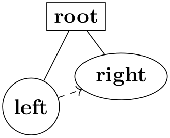
In many cases, the ⟨child path⟩ will just consist of a specification of a child node and, possibly, children of this child node. However, the node specification may be followed by arbitrary other material that will be added to the picture, transformed to the child’s coordinate system. For your convenience, a move-to (0,0) operation is inserted automatically at the beginning of the path. Here is an example:
\begin{tikzpicture}
\node {root}
child
{[fill] circle
(2pt)}
child
{[fill] circle
(2pt)};
\end{tikzpicture}
At the end of the ⟨child path⟩ you may add a special path operation called edge from parent. If this operation is not given by yourself somewhere on the path, it will be automatically added at the end. This option causes a connecting edge from the parent node to the child node to be added to the path. By giving options to this operation you can influence how the edge is rendered. Also, nodes following the edge from parent operation will be placed on this edge, see Section 21.6 for details.
To sum up:
-
1. The child path starts with a node specification. If it is not there, it is added automatically.
-
2. The child path ends with a edge from parent operation, possibly followed by nodes to be put on this edge. If the operation is not given at the end, it is added automatically.
21.3 Naming Child Nodes¶
Child nodes can be named like any other node using either the name option or the special syntax in which the name of the node is placed in round parentheses between the node operation and the node’s text.
If you do not assign a name to a child node, TikZ will automatically assign a name as follows: Assume that the name of the parent node is, say, parent. (If you did not assign a name to the parent, TikZ will do so itself, but that name will not be user-accessible.) The first child of parent will be named parent-1, the second child is named parent-2, and so on.
This naming convention works recursively. If the second child parent-2 has children, then the first of these children will be called parent-2-1 and the second parent-2-2 and so on.
If you assign a name to a child node yourself, no name is generated automatically (the node does not have two names). However, “counting continues”, which means that the third child of parent is called parent-3 independently of whether you have assigned names to the first and/or second child of parent.
Here is an example:
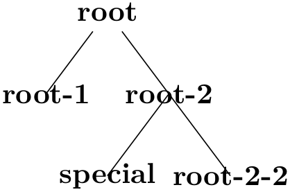
\begin{tikzpicture}[sibling distance=15mm]
\node (root) {root}
child
child
{
child
{coordinate
(special)}
child
};
\node at
(root-1) {root-1};
\node at
(root-2) {root-2};
\node at
(special) {special};
\node at
(root-2-2) {root-2-2};
\end{tikzpicture}
21.4 Specifying Options for Trees and Children¶
Each child may have its own ⟨options⟩, which apply to “the whole child”, including all of its grandchildren. Here is an example:
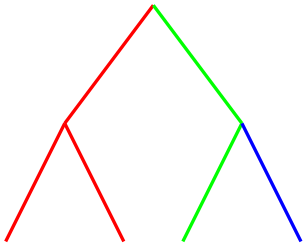
\begin{tikzpicture}
[thick,level 1/.style={sibling distance=15mm},
level 2/.style={sibling distance=10mm}]
\coordinate
child[red] {child
child}
child[green] {child
child[blue]};
\end{tikzpicture}
The options of the root node have no effect on the children since the options of a node are always “local” to that node. Because of this, the edges in the following tree are black, not red.
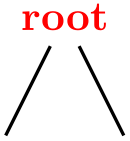
\begin{tikzpicture}[thick]
\node [red] {root}
child
child;
\end{tikzpicture}
This raises the problem of how to set options for all children. Naturally, you could always set options for the whole path as in \path [red] node {root} child child; but this is bothersome in some situations. Instead, it is easier to give the options before the first child as follows:
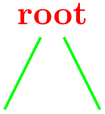
\begin{tikzpicture}[thick]
\node [red] {root}
[green] % option applies to all children
child
child;
\end{tikzpicture}
Here is the set of rules:
-
1. Options for the whole tree are given before the root node.
-
2. Options for the root node are given directly to the node operation of the root.
-
3. Options for all children can be given between the root node and the first child.
-
4. Options applying to a specific child path are given as options to the child operation.
-
5. Options applying to the node of a child, but not to the whole child path, are given as options to the node command inside the ⟨child path⟩.
\begin{tikzpicture}
\scoped
[...] % Options apply to the whole tree
\node[...] {root} % Options apply to the root node only
[...] % Options apply to all children
child[...] % Options apply to this child and all its children
{
node[...] {} % Options apply to the child node only
...
}
child[...] % Options apply to this child and all its children
;
\end{tikzpicture}
There are additional styles that influence how children are rendered:
/tikz/every child(style, initially empty) ¶
This style is used at the beginning of each child, as if you had given the style’s contents as options to the child operation.
/tikz/every child node(style, initially empty) ¶
This style is used at the beginning of each child node in addition to the every node style.
/tikz/level=⟨number⟩ (style, no default, initially empty) ¶
This style is executed at the beginning of each set of children, where ⟨number⟩ is the current level in the current tree. For example, when you say \node {x} child child;, then level=1 is used before the first child. The style or code of this key will be passed ⟨number⟩ as its first parameter. If this first child has children itself, then level=2 would be used for them.
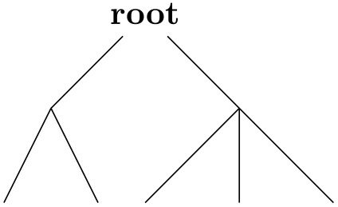
\begin{tikzpicture}[level/.style={sibling distance=20mm/#1}]
\node {root}
child
{ child
child
}
child
{ child
child
child
};
\end{tikzpicture}
/tikz/level ⟨number⟩(style, initially empty) ¶
This style is used in addition to the level style. So, when you say \node {x} child child;, then the following key list is executed: level=1,level 1.
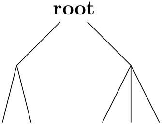
\begin{tikzpicture}
[level 1/.style={sibling distance=20mm},
level 2/.style={sibling distance=5mm}]
\node {root}
child
{ child
child
}
child
{ child
child
child
};
\end{tikzpicture}
21.5 Placing Child Nodes¶
21.5.1 Basic Idea¶
Perhaps the most difficult part in drawing a tree is the correct layout of the children. Typically, the children have different sizes and it is not easy to arrange them in such a manner that not too much space is wasted, the children do not overlap, and they are either evenly spaced or their centers are evenly distributed. Calculating good positions is especially difficult since a good position for the first child may depend on the size of the last child.
In basic TikZ, when you do not make use of the graph drawing facilities explained in Part IV, a comparatively simple approach is taken to placing the children. In order to compute a child’s position, all that is taken into account is the number of the current child in the list of children and the number of children in this list. Thus, if a node has five children, then there is a fixed position for the first child, a position for the second child, and so on. These positions do not depend on the size of the children and, hence, children can easily overlap. However, since you can use options to shift individual children a bit, this is not as great a problem as it may seem.
Although the placement of the children only depends on their number in the list of children and the total number of children, everything else about the placement is highly configurable. You can change the distance between children (appropriately called the sibling distance) and the distance between levels of the tree. These distances may change from level to level. The direction in which the tree grows can be changed globally and for parts of the tree. You can even specify your own “growth function” to arrange children on a circle or along special lines or curves.
21.5.2 Default Growth Function¶
The default growth function works as follows: Assume that we are given a node and five children. These children will be placed on a line with their centers (or, more generally, with their anchors) spaced apart by the current sibling distance. The line is orthogonal to the current direction of growth, which is set with the grow and grow' option (the latter option reverses the ordering of the children). The distance from the line to the parent node is given by the level distance.

\begin{tikzpicture}[sibling distance=15mm, level distance=15mm]
\path [help lines]
node
(root) {root}
[grow=-10]
child
{node
{1}}
child
{node
{2}}
child
{node
{3}}
child
{node
{4}};
\draw[|<->|,thick] (root-1.center)
--
node[above,sloped] {sibling
distance} (root-2.center);
\draw[|<->|,thick] (root.center)
--
node[above,sloped] {level
distance} +(-10:\tikzleveldistance);
\end{tikzpicture}
/tikz/level distance=⟨distance⟩ (no default, initially 15mm) ¶
This key determines the distance between different levels of the tree, more precisely, between the parent and the line on which its children are arranged. When given to a single child, this will set the distance for this child only.
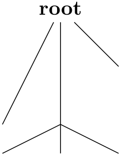
\begin{tikzpicture}
\node {root}
[level distance=20mm]
child
child
{
[level distance=5mm]
child
child
child
}
child[level distance=10mm];
\end{tikzpicture}

\begin{tikzpicture}
[level 1/.style={level distance=10mm},
level 2/.style={level distance=5mm}]
\node {root}
child
child
{
child
child[level distance=10mm]
child
}
child;
\end{tikzpicture}
/tikz/sibling distance=⟨distance⟩ (no default, initially 15mm) ¶
This key specifies the distance between the anchors of the children of a parent node.
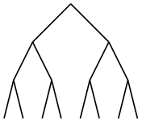
\begin{tikzpicture}
[level distance=4mm,
level 1/.style={sibling distance=8mm},
level 2/.style={sibling distance=4mm},
level 3/.style={sibling distance=2mm}]
\coordinate
child
{
child
{child
child}
child
{child
child}
}
child
{
child
{child
child}
child
{child
child}
};
\end{tikzpicture}
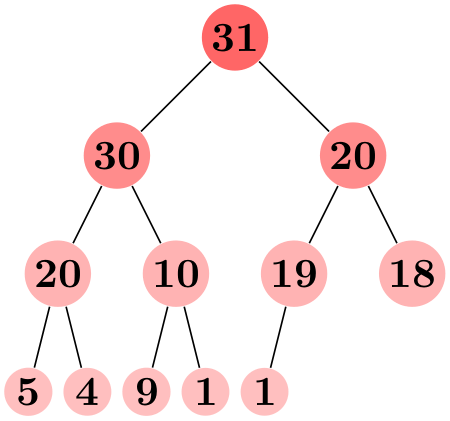
\begin{tikzpicture}
[level distance=10mm,
every node/.style={fill=red!60,circle,inner sep=1pt},
level 1/.style={sibling distance=20mm,nodes={fill=red!45}},
level 2/.style={sibling distance=10mm,nodes={fill=red!30}},
level 3/.style={sibling distance=5mm,nodes={fill=red!25}}]
\node {31}
child
{node
{30}
child
{node
{20}
child
{node
{5}}
child
{node
{4}}
}
child
{node
{10}
child
{node
{9}}
child
{node
{1}}
}
}
child
{node
{20}
child
{node
{19}
child
{node
{1}}
child[missing]
}
child
{node
{18}}
};
\end{tikzpicture}
/tikz/grow=⟨direction⟩(no default) ¶
This key is used to define the ⟨direction⟩ in which the tree will grow. The ⟨direction⟩ can either be an angle in degrees or one of the following special text strings: down, up, left, right, north, south, east, west, north east, north west, south east, and south west. All of these have “their obvious meaning”, so, say, south west is the same as the angle \(-135^\circ \).
As a side effect, this option installs the default growth function.
In addition to setting the direction, this option also has a seemingly strange effect: It sets the sibling distance for the current level to 0pt, but leaves the sibling distance for later levels unchanged.
This somewhat strange behavior has a highly desirable effect: If you give this option before the list of children of a node starts, the “current level” is still the parent level. Each child will be on a later level and, hence, the sibling distance will be as specified originally. This will cause the children to be neatly aligned in a line orthogonal to the given ⟨direction⟩. However, if you give this option locally to a single child, then “current level” will be the same as the child’s level. The zero sibling distance will then cause the child to be placed exactly at a point at distance level distance in the direction ⟨direction⟩. However, the children of the child will be placed “normally” on a line orthogonal to the ⟨direction⟩.
These placement effects are best demonstrated by some examples:

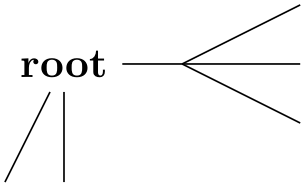
\begin{tikzpicture}[level distance=10mm,sibling distance=5mm]
\node {root}
[grow=down]
child
child
child[grow=right] {
child
child
child
};
\end{tikzpicture}

\begin{tikzpicture}[level distance=2em]
\node {C}
child[grow=up] {node
{H}}
child[grow=left] {node
{H}}
child[grow=down] {node
{H}}
child[grow=right] {node
{C}
child[grow=up] {node
{H}}
child[grow=right] {node
{H}}
child[grow=down] {node
{H}}
edge
from
parent[double]
coordinate
(wrong)
};
\draw[<-,red] ([yshift=-2mm]wrong) --
+(0,-1)
node[below]{This
is
wrong!};
\end{tikzpicture}
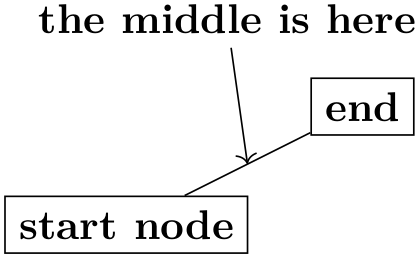
/tikz/grow'=⟨direction⟩(no default) ¶
This key has the same effect as grow, only the children are arranged in the opposite order.
21.5.3 Missing Children¶
Sometimes one or more of the children of a node are “missing”. Such a missing child will count as a child with respect to the total number of children and also with respect to the current child count, but it will not be rendered.
/tikz/missing=⟨true or false⟩ (default true) ¶
If this option is given to a child, the current child counter is increased, but the child is otherwise ignored. In particular, the normal contents of the child is completely ignored.
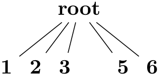
\begin{tikzpicture}[level distance=10mm,sibling distance=5mm]
\node {root} [grow=down]
child
{ node
{1} }
child
{ node
{2} }
child
{ node
{3} }
child[missing] { node
{4} }
child
{ node
{5} }
child
{ node
{6} };
\end{tikzpicture}
21.5.4 Custom Growth Functions¶
/tikz/growth parent anchor=⟨anchor⟩ (no default, initially center) ¶
This key allows you to specify which anchor of the parent node is to be used for computing the children’s position. For example, when there is only one child and the level distance is 2cm, then the child node will be placed two centimeters below the ⟨anchor⟩ of the parent node. “Being placed” means that the child node’s anchor (which is the anchor specified using the anchor= option in the node command of the child) is two centimeters below the parent node’s ⟨anchor⟩.
In the following example, the two red lines both have length 1cm.
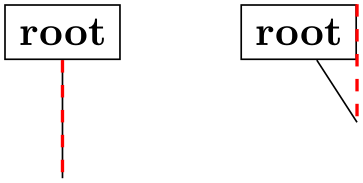
\begin{tikzpicture}[level distance=1cm]
\node [rectangle,draw] (a) at
(0,0) {root}
[growth parent anchor=south] child;
\node [rectangle,draw] (b) at
(2,0) {root}
[growth parent anchor=north east] child;
\draw [red,thick,dashed] (a.south) --
(a-1);
\draw [red,thick,dashed] (b.north east) --
(b-1);
\end{tikzpicture}
In the next example, the top and bottom nodes are aligned at the top and the bottom, respectively.
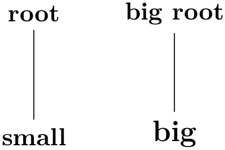
\begin{tikzpicture}
[level distance=2cm,growth parent anchor=north,
every node/.style={anchor=north,rectangle,draw}
every child node/.style={anchor=south}]
\node at
(0,0) {root} child
{node
{small}};
\node at
(2,0) {big
root} child
{node
{\large big}};
\end{tikzpicture}
/tikz/growth function=⟨macro name⟩ (no default, initially an internal function) ¶
This rather low-level option allows you to set a new growth function. The ⟨macro name⟩ must be the name of a macro without parameters. This macro will be called for each child of a node. The initial function is an internal function that corresponds to downward growth.
The effect of executing the macro should be the following: It should transform the coordinate system in such a way that the origin becomes the place where the current child should be anchored. When the macro is called, the current coordinate system will be set up such that the anchor of the parent node is in the origin. Thus, in each call, the ⟨macro name⟩ must essentially do a shift to the child’s origin. When the macro is called, the TeX counter \tikznumberofchildren will be set to the total number of children of the parent node and the counter \tikznumberofcurrentchild will be set to the number of the current child.
The macro may, in addition to shifting the coordinate system, also transform the coordinate system further. For example, it could be rotated or scaled.
Additional growth functions are defined in the library, see Section 75.
21.6 Edges From the Parent Node¶
Every child node is connected to its parent node via a special kind of edge called the edge from parent. This edge is added to the ⟨child path⟩ when the following path operation is encountered:
\path … edge from parent[⟨options⟩] …; ¶
This path operation can only be used inside ⟨child paths⟩ and should be given at the end, possibly followed by ⟨node specifications⟩ like node {a}. If a ⟨child path⟩ does not contain this operation, it will be added at the end of the ⟨child path⟩ automatically.
By default, this operation does the following:
1. The following style is executed:
/tikz/edge from parent(style, initially draw) ¶
This style is inserted right before the edge from parent path and before the ⟨options⟩ are inserted.
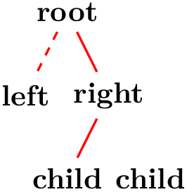
2. Next, the ⟨options⟩ are executed.
3. Next, the text stored in the following key is inserted:
/tikz/edge from parent path=⟨path⟩ (no default, initially code shown below) ¶
This option allows you to set the edge from parent path to a new path. Initially, this path is the following:
(\tikzparentnode\tikzparentanchor) --
(\tikzchildnode\tikzchildanchor)
The \tikzparentnode is a macro that will expand to the name of the parent node. This works even when you have not assigned a name to the parent node, in this case an internal name is automatically generated. The \tikzchildnode is a macro that expands to the name of the child node. The two ...anchor macros are empty by default. So, what is essentially inserted is just the path segment (\tikzparentnode) -- (\tikzchildnode); which is exactly an edge from the parent to the child.
You can modify this edge from parent path to achieve all sorts of effects. For example, we could replace the straight line by a curve as follows:
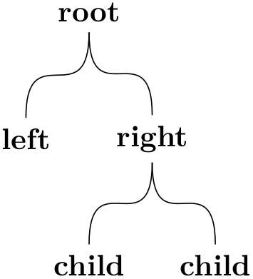
\begin{tikzpicture}[level distance=15mm, sibling distance=15mm,
edge from parent path=
{(\tikzparentnode.south) .. controls
+(0,-1) and +(0,1)
.. (\tikzchildnode.north)}]
\node {root}
child
{node
{left}}
child
{node
{right}
child
{node
{child}}
child
{node
{child}}
};
\end{tikzpicture}
Further useful edge from parent paths are defined in the tree library, see Section 75.
The nodes in a ⟨node specification⟩ following the edge from parent path command get executed as if the pos option had been added to all these nodes, see also Section 17.8.
As an example, consider the following code:
The edge to parent operation and the following node operation will, together, have the same effect as if we had said:
Here is a more complicated example:
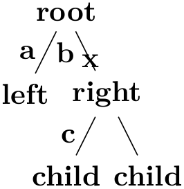
As said before, the anchors in the default edge from parent path are empty. However, you can set them using the following keys:
/tikz/child anchor=⟨anchor⟩ (no default, initially border) ¶
Specifies the anchor where the edge from parent meets the child node by setting the macro \tikzchildanchor to .⟨anchor⟩.
If you specify border as the ⟨anchor⟩, then the macro \tikzchildanchor is set to the empty string. The effect of this is that the edge from the parent will meet the child on the border at an automatically calculated position.
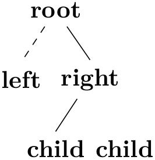
/tikz/parent anchor=⟨anchor⟩ (no default, initially border) ¶
This option works the same way as the child anchor, only for the parent.
All of the above describes the standard functioning of the edge from parent command. You may, however, sometimes need even more fine-grained control (the graph drawing engine needs it, for instance). In such cases the following key gives you complete control:
/tikz/edge from parent macro=⟨macro⟩(no default) ¶
The ⟨macro⟩ gets expanded each time the edge from parent path operation is used. This ⟨macro⟩ must take two parameters and must expand to some text that is subsequently parsed by the parser. The first parameter will be the set of ⟨options⟩ that where passed to the edge from parent command, the second parameter will be the ⟨node specifications⟩ that following the command.
The standard behavior of drawing a straight line from the parent node to the child node could be achieved by setting the ⟨macro⟩ to the following:
\def\mymacro#1#2{
[style=edge from parent, #1]
(\tikzparentnode\tikzparentanchor) --
#2
(\tikzchildnode\tikzchildanchor)
}
Note that #2 is placed between -- and the node to ensure that nodes are put “on top” of the line.